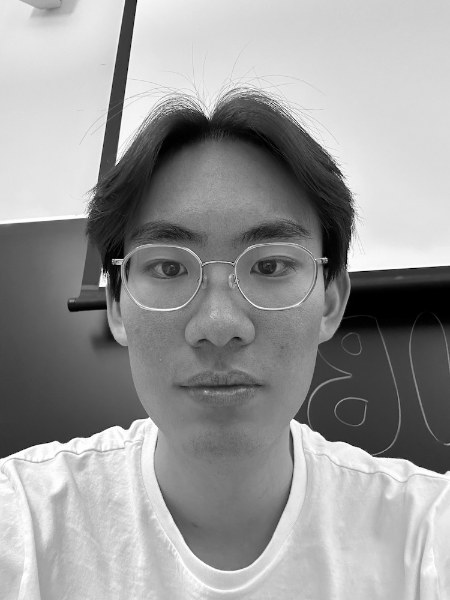
Grayscale input
CS 180 · Fall 2026 · Project 2
Part 1
Fun with Filters
def zero_pad(image, kernel_shape):
kernel_height, kernel_width = kernel_shape
pad_left = kernel_width // 2
pad_right = (kernel_width - 1) // 2
pad_top = kernel_height // 2
pad_bottom = (kernel_height - 1) // 2
h, w = image.shape
padded = np.zeros((h + pad_top + pad_bottom, w + pad_left + pad_right), dtype=image.dtype)
padded[pad_top:pad_top + h, pad_left:pad_left + w] = image
return paddeddef convolve_four_loops(image, kernel):
kernel_height, kernel_width = kernel.shape
padded_image = zero_pad(image, kernel.shape)
output_height = image.shape[0]
output_width = image.shape[1]
output = np.zeros((output_height, output_width), dtype=image.dtype)
convolution = np.flipud(np.fliplr(kernel))
for i in range(output_height):
for j in range(output_width):
region = padded_image[i:i + kernel_height, j:j + kernel_width]
val = 0
for y in range(kernel_height):
for x in range(kernel_width):
val += region[y, x] * convolution[y, x]
output[i, j] = val
return outputdef convolve_two_loops(image, kernel):
kernel_height, kernel_width = kernel.shape
padded_image = zero_pad(image, kernel.shape)
output_height = image.shape[0]
output_width = image.shape[1]
output = np.zeros((output_height, output_width), dtype=image.dtype)
convolution = np.flipud(np.fliplr(kernel))
for i in range(output_height):
for j in range(output_width):
region = padded_image[i:i + kernel_height, j:j + kernel_width]
output[i, j] = np.sum(region * convolution)
return outputThe first code block is the zero padding, which pads the image by half the kernel size on each side, so the output is the same
size as the input. For even-sized kernels, the extra row or column of
padding goes on the top or left. The next two code blocks are the convolution implementations.
convolve_four_loops and convolve_two_loops do the same thing:
they take the kernel, flip it, slide it over the image, and compute the sum of element-wise products for each position.
The difference is that convolve_four_loops iterates through each pixel in the image and kernel to compute the sum of products,
whereas convolve_two_loops uses NumPy's vectorized operations to compute the sum of products, which is much faster.

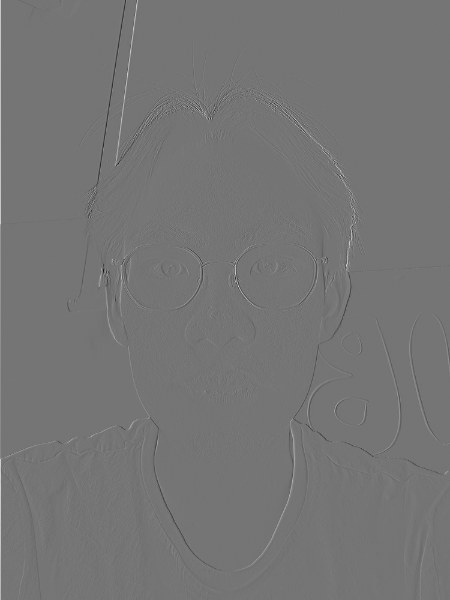
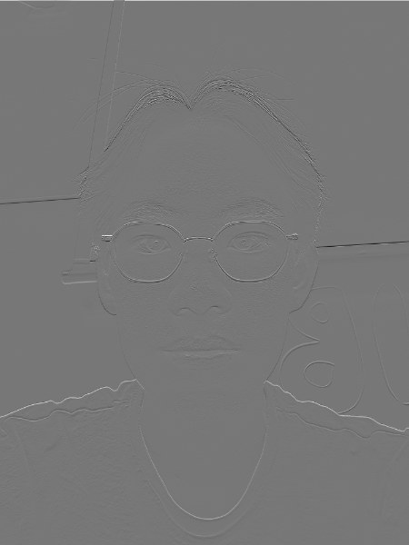
Above, I took a selfie and applied a 9×9 box filter. On the boundaries, my zero padding matches convolve2d’s default:
boundary="fill", fillvalue=0, and mode="same". This zero padding darkens the border
of the box-filtered image, which is visible in the second image as the dark border. This is because pixels near the edge get averaged with black pixels outside it.
The next two images are the results of convolving with the finite difference operators Dx and Dy.
The image convolved with Dx shows vertical edges, while the image convolved with Dy shows horizontal edges.
| Implementation | Runtime |
|---|---|
| Four loops | 114.9 s |
| Two loops | 17.3 s |
scipy.signal.convolve2d | 0.97 s |
In the images above, I used a lower-resolution copy of the original image. However, for the purpose of showing the efficiency difference between the three convolution implementations,
I timed each implementation with the 9×9 box filter on the full-resolution (3088×2316) grayscale photo of myself.
From the table above, you can see that vectorizing the inner loops made the two-loop version more than 6× faster than four loops,
and convolve2d is another 18× faster than that (about 120× faster than four loops).
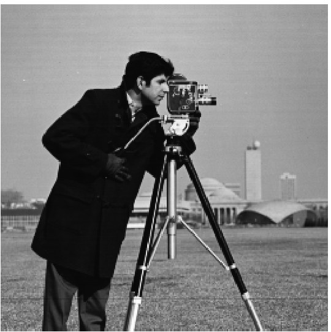
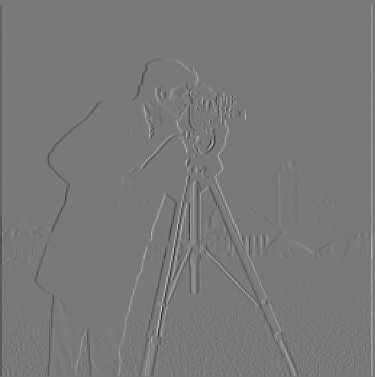
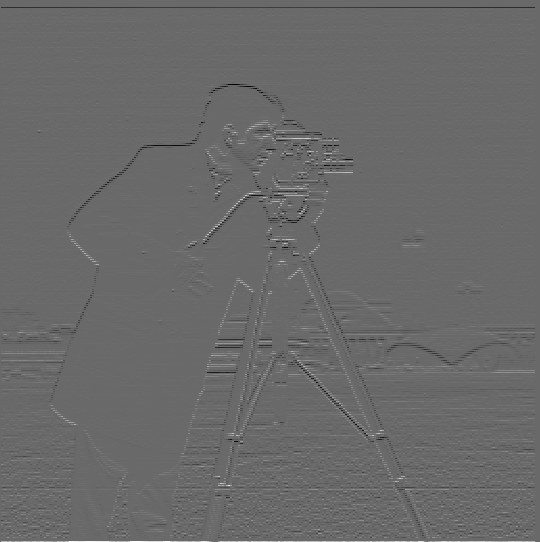
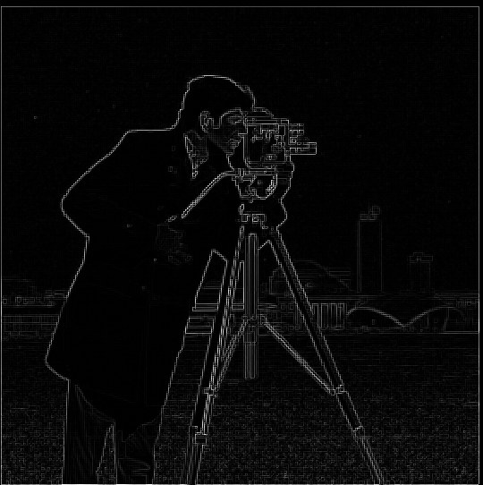
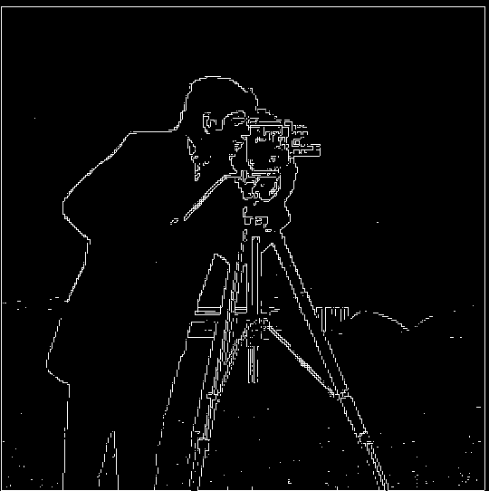
The finite difference operators approximate the image's derivatives by subtracting neighboring pixels.
Convolving the image with Dx = [1, −1] gives the horizontal derivative, so it shows vertical edges where brightness changes from left to right.
Similarly, Dy gives the vertical derivative, so it shows horizontal edges.
Then, to get edges in all directions, I combined the two partial derivatives into the gradient magnitude, which is large wherever the intensity changes.
The last step is to binarize the magnitude with a threshold, meaning pixels above the chosen threshold are marked as edges while everything else is set to zero. There is no optimal value for this threshold, so I did a sweep of values from 0.1 to 0.35. From what I observed, a smaller threshold meant more details were kept; you could see the fine lines of the camera, but also the noise such as the grass texture at the bottom of the image. On the other hand, a larger threshold meant less of this noise, but also less detail in general, losing both the fine lines on the camera and details of the background. For this demonstration, I selected a threshold of 0.25, which seemed, visually, to be a good balance of both.
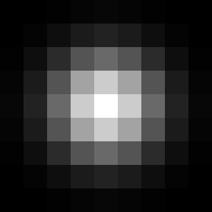
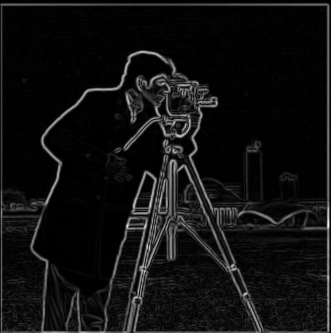

The derivative of Gaussian (DoG) approach blurs the image with a Gaussian filter before taking the finite differences like in part 1.2. The Gaussian filter removes fine, high-frequency details like the grass texture while keeping the larger details more or less unchanged. Comparing this to the result from part 1.2, the DoG approach causes the edges to be more robust to noise. This can be seen from the fact that there is no grass/noise in our edges, when there was in part 1.2. Similar to part 1.2, we still have to choose a threshold to determine edges. I did a sweep of thresholds from 0.05 to 0.15, and visually, a threshold of 0.08 seemed to be a good balance without removing too much detail.
Now, since the Gaussian filter and derivatives are both convolutions, we can combine them into a single convolution: the derivative of Gaussian (DoG) filters.
The DoG filters are the result of convolving the Gaussian kernel with the finite difference operators Dx and Dy.
So, instead of first blurring the image and then taking the derivative, we can achieve it all in one step to get the same result. The result is below.
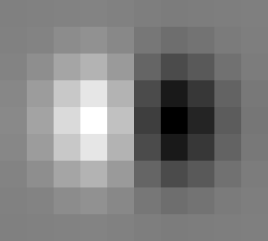
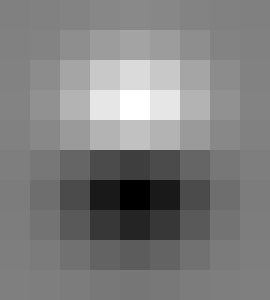

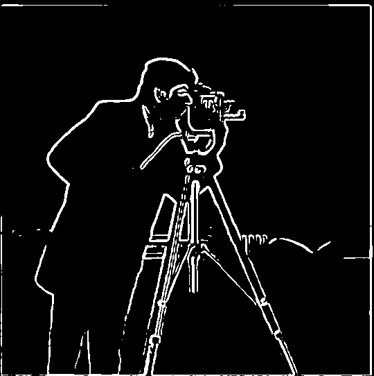
Indeed, visually, the result from the DoG filters is identical to the result from blurring then differentiating.
This is what we expect, as convolution is associative, so (image ∗ G) ∗ Dx = image ∗ (G ∗ Dx).
The specific implementation of this was to first convolve the 9×9 Gaussian (σ = 1.5) with Dx and Dy in "full" mode, giving 9×10 and 10×9 filters.
Then, I convolved the image with these two DoG filters to get the gradient magnitude and edges. The benefit of this is that we only need to convolve the image once per direction instead of twice, and the DoG filters are built once and reused.
Ultimately this saves time and compute.
Part 2
Fun with Frequencies
Unsharp masking sharpens an image by boosting its high frequencies, which it gets from a blur. The process is as follows: a Gaussian blur is applied to the image, which keeps the low-frequency content and removes the high-frequency content. Subtracting the blurred image from the original therefore leaves only what the blur removed, which was the high-frequency details such as edges and texture. Then, we can add these high-frequency details back to the original image to sharpen the image. The amount of sharpening is controlled by the parameter α.
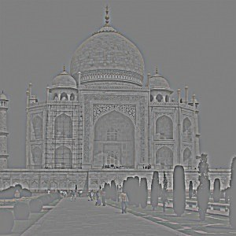
All in all, it follows this procedure:
sharpened = image + α · (image − image ∗ G)
Furthermore, since convolution is linear, the three steps can be collapsed into one filter. Writing the image as image ∗ e, where e is the unit impulse, the expression rearranges to:
sharpened = image ∗ ((1 + α) e − α G)
The kernel (1 + α) e − α G is the unsharp mask filter.
Interestingly, unsharp masking doesn't add any new information; rather, it amplifies existing detail. The sharpened image looks sharper because its edges have more contrast. As α increases, noise and texture also get amplified along with the real edges, and the sharpened image looks more artificial. This progression can be seen below:
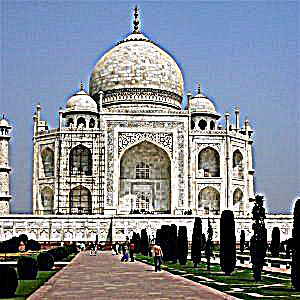
For my own image, I chose a blurry photo of a cat. The original image is already blurry, which was my intention. I was curious to see if unsharp masking could sharpen the image without making it look too artificial. However, as we can see from the third image (high frequencies), the high-frequency details are weak, and the carpet is picked up a lot. Going through the process, the sharpened result does look sharper, but not by a significant amount.
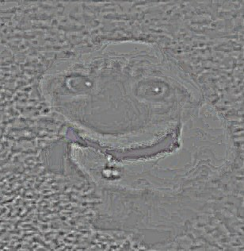
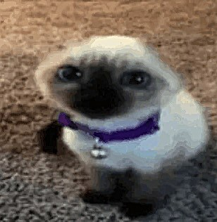
To test whether sharpening can recover lost detail, I started from an image of my home, Singapore. I believe this photo is a good test for this task, since it has a lot of fine details. I took this already sharp image and blurred it with a Gaussian filter. Then, I applied the unsharp mask filter to the blurred image. With α = 3, shown above, the image definitely recovered some of the details.
To be specific, when the image was resharpened, the edges became sharper, but weren't the same as the original. In the resharpened version, the edges look bolder and darker, but the overall quality of the image was not as good as the original. This shows that unsharp masking can recover some lost detail, but it cannot fully restore the original image.
In this next section, I create hybrid images, which are images that look like one thing up close and like something else from far away. Up close, the high-frequency details dominate what we see, while from a distance our eyes can only pick up the low-frequency details. Below is the example of Derek and Nutmeg. First, I aligned the two images, in this case aligning Derek and Nutmeg's eyes. Then, I used a Gaussian blur on Derek and a high pass on Nutmeg by subtracting Nutmeg's blurred image from the original. Finally, I added the two results together to get the hybrid image. Up close you see Nutmeg's details; the fur and the outline are clear. From further away, Nutmeg fades away and Derek is what you can make out.
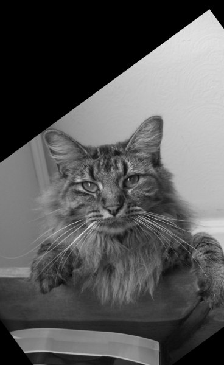
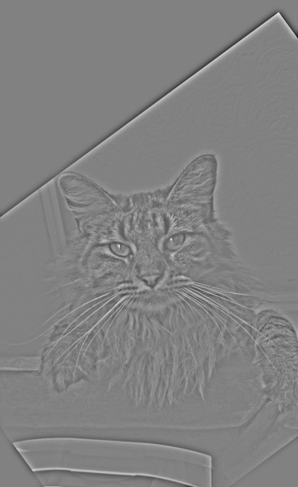
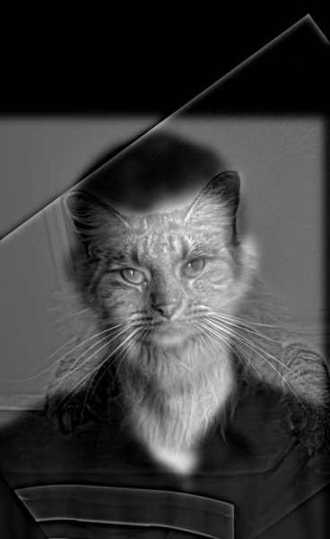
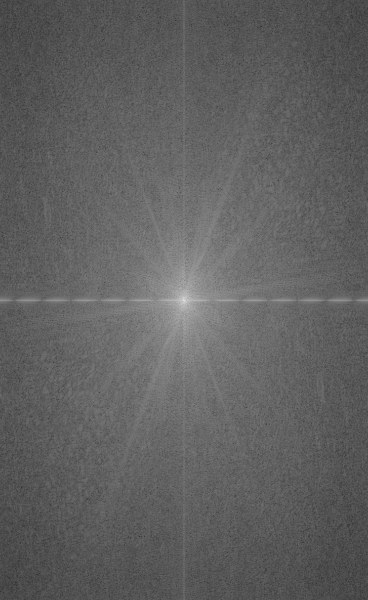
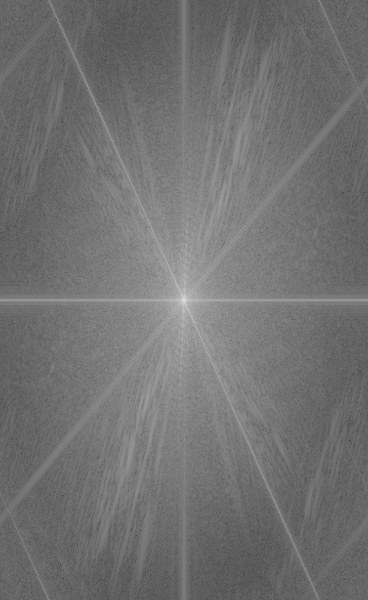
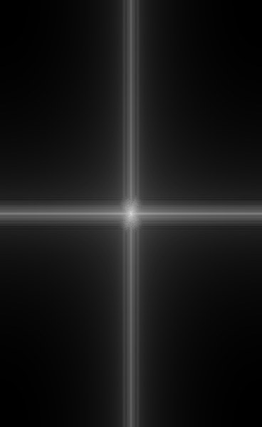
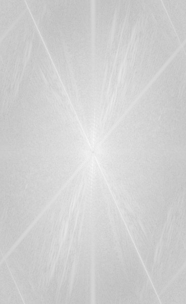
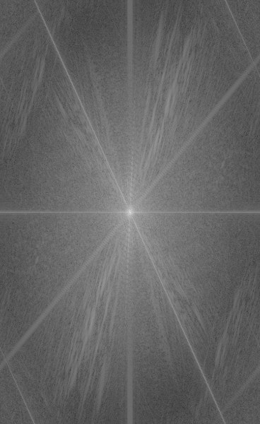
Since Derek is the image you see from far away, I want to keep only his low frequencies. I do this by blurring him with a Gaussian of σlow = 10. Nutmeg is the image you see up close, so I want to keep only the high frequencies by blurring with a Gaussian of σhigh = 8 and subtracting that blur from the original, leaving just the fine detail.
The σ values measure how wide the blur is, in other words how much of the detail gets smoothed away. σlow controls how much of Derek is blurred, so a bigger σlow means a blurrier Derek. Similarly, σhigh controls how much of Nutmeg is blurred, but since the blur is what I remove from Nutmeg, a bigger σhigh removes a wider blur and leaves more of Nutmeg. For clarity:
For my experiment above, I chose σlow = 10 and σhigh = 8, which I found to be a good balance visually. The Fourier transforms also show the effect of the filtering. After filtering, Derek's energy is concentrated in the center, keeping low frequencies, and Nutmeg's center is removed, keeping high frequencies.
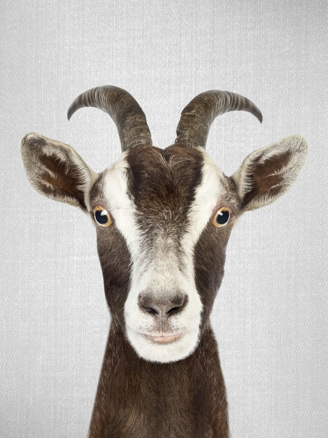
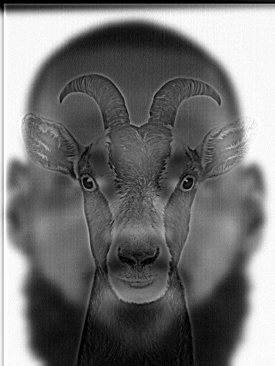
For this hybrid, LeBron James is the image you see from far away and a goat is the one you see up close. To balance these images, I used σhigh = 3, so that the goat fades cleanly into LeBron. I also used σlow = 6 so that LeBron is still recognizable.
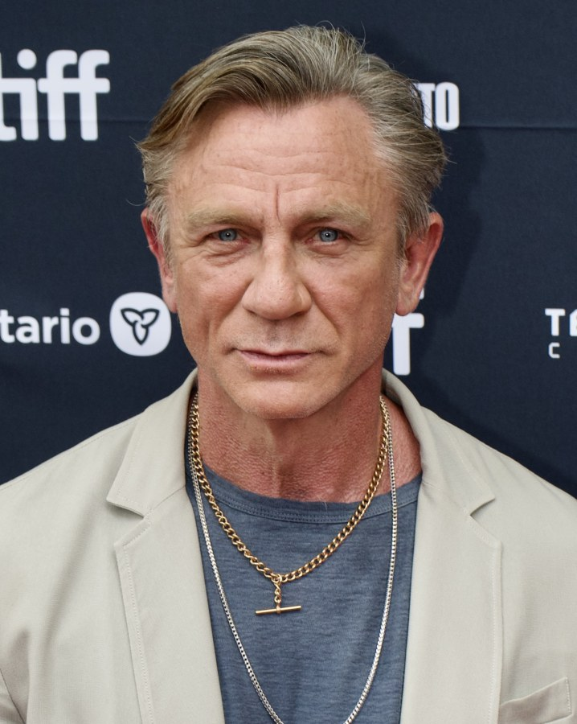
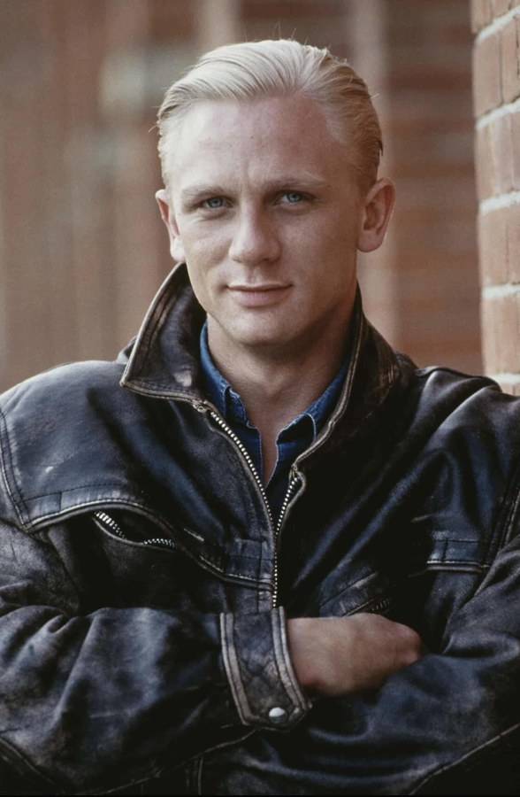
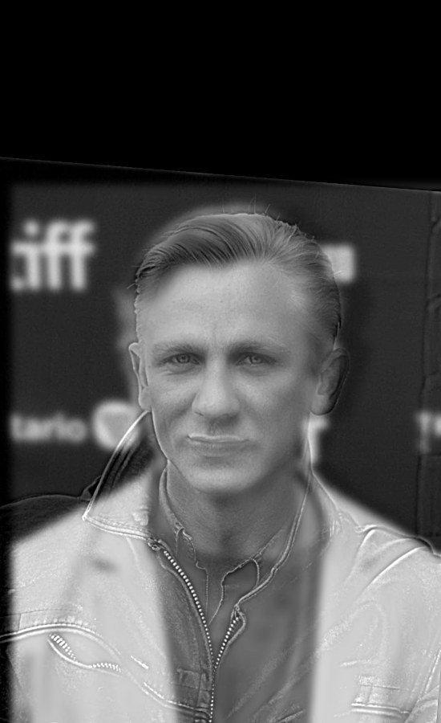
For this final hybrid, I used Daniel Craig, overlaying a picture of him today and of him when he was younger. The younger version is the one you see up close, and the older version is the one visible from far away, so the image ages as you step back. I used σhigh = 5 so the younger version's sharp details, such as the hairline and the jacket, show up close.
This section splits an image into separate frequency bands, which sets up blending in part 2.4. Similar to a Gaussian pyramid, a Gaussian stack is built by blurring the image at each step, so each Gi is blurrier than the last. However, unlike a pyramid, the stack never downsamples so every level stays the same size as the original. A Laplacian stack builds off of this, and is the difference between Gaussian levels: Li = Gi − Gi+1. Each level essentially contains the details that were removed by the blur. L0 has the finest detail, while the higher levels hold coarser details. The last level is the same as the last Gaussian level.
The point of splitting an image into these bands is so that each band can be blended with a different width of transition in part 2.4. Fine details get a narrow seam so they don't ghost, while coarser details get a wider seam so the transition is more gradual.
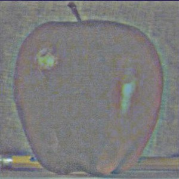
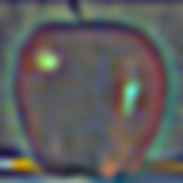
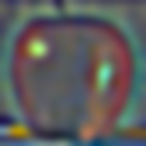
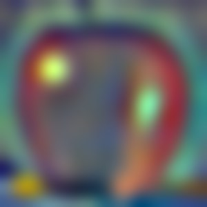
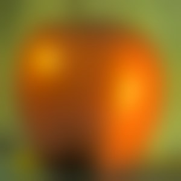
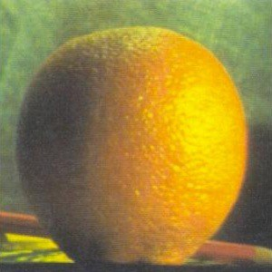
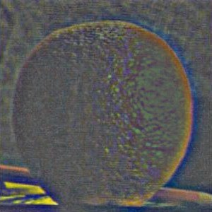
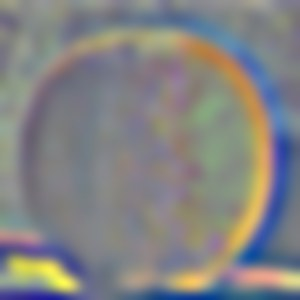
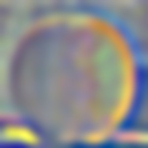
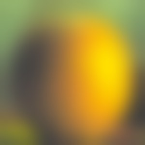
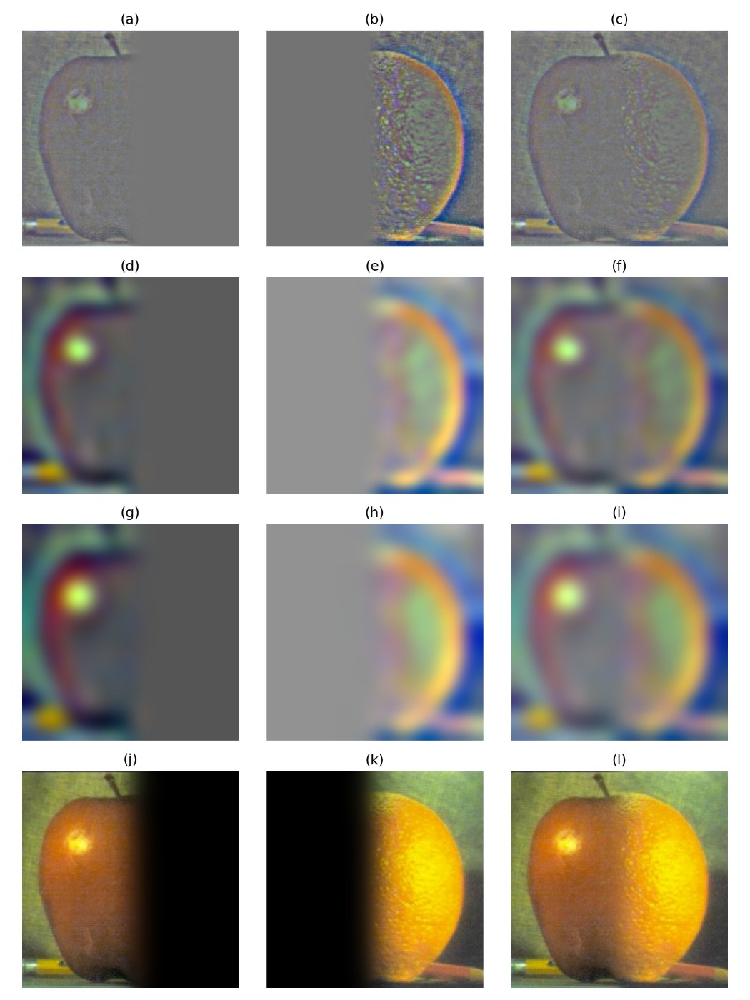
Using the stacks of the apple and orange, I recreated Szeliski Fig. 3.42 (a)–(l).
Now that we have gone through Gaussian and Laplacian stacks, we can move on to multiresolution blending. As shown by the oraple in part 2.3, we can blend two images together using a mask. This section goes into two cases: vertical seams and irregular seams.
For the vertical seam, the mask is a step function. In my two examples below, I blended my glasses and sunglasses, as well as two of my watches. The watches use a larger sigma since the blue and silver dials needed a wider transition.
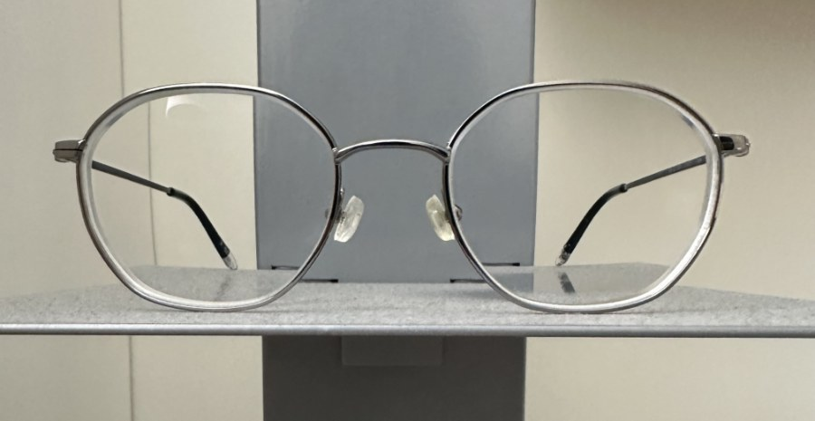
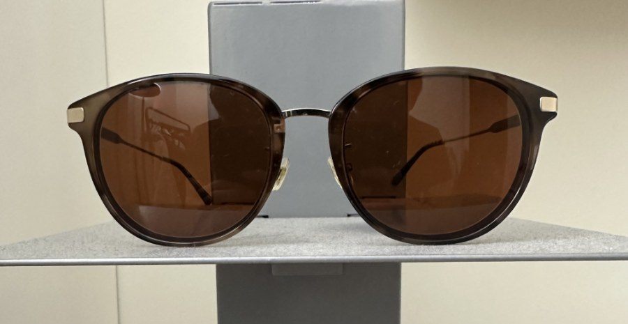
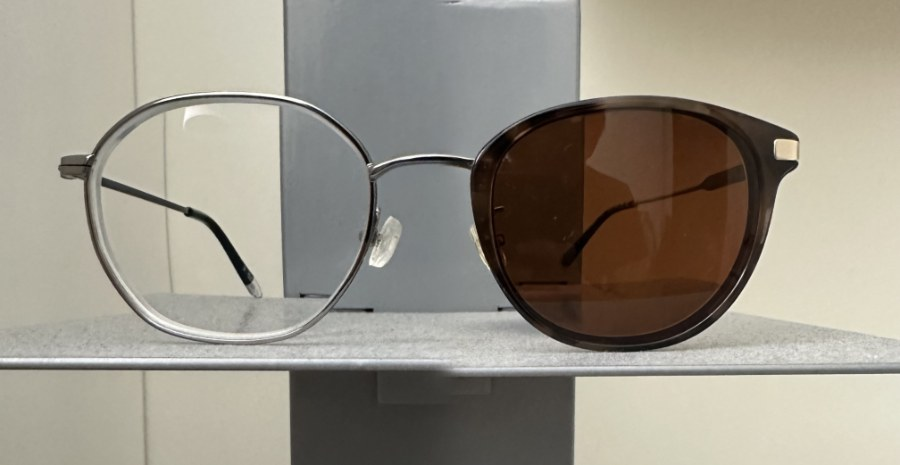
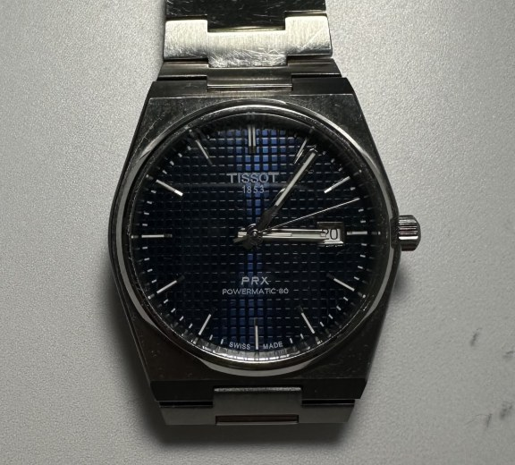
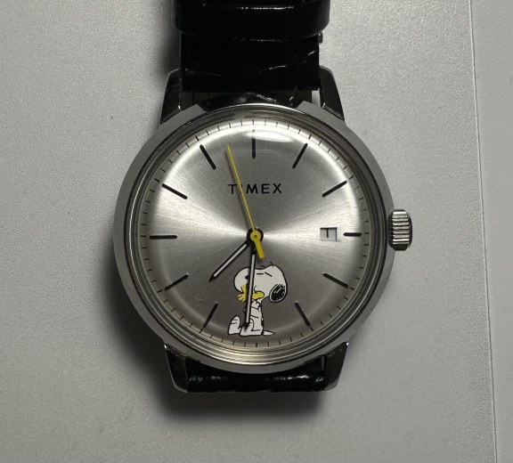
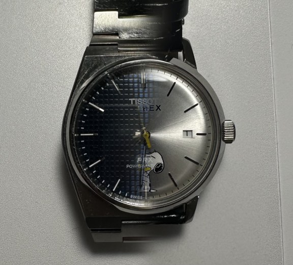
For the irregular seam examples, the mask follows the shape of the object. I first placed the foreground onto the background, then drew the mask as a polygon around the part of the foreground to keep. The blending itself is the same as for the vertical seam examples. I hope you enjoy my art collection below.
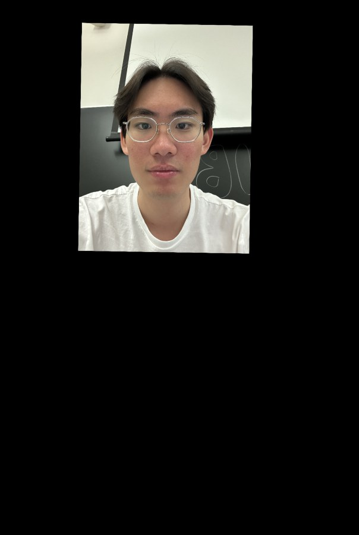
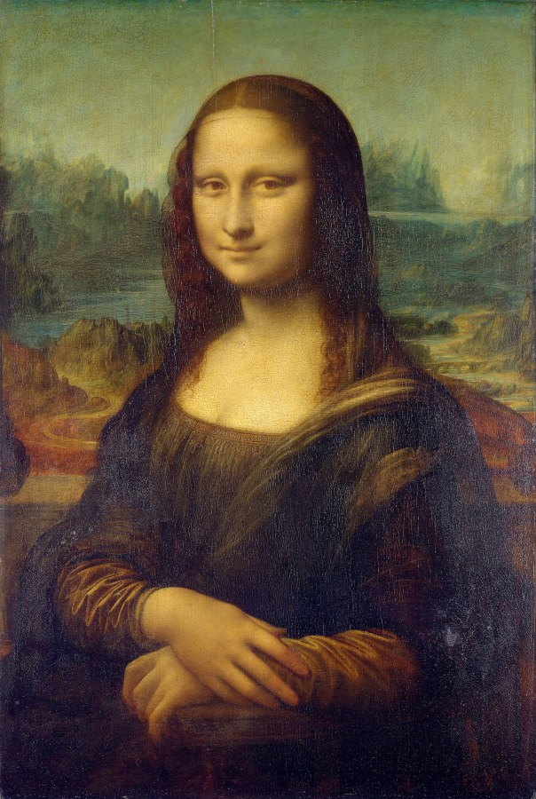
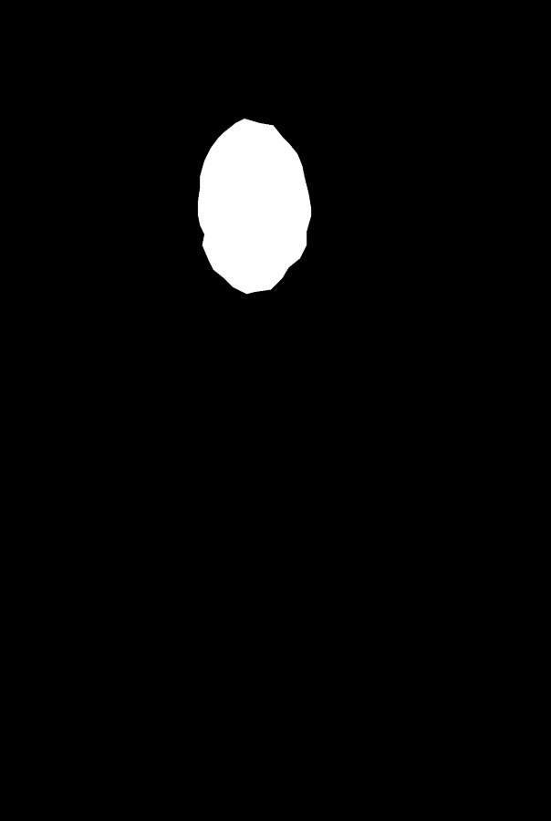
Each of the three examples above showcases a different seam. In the first, I blended only my face over the Mona Lisa. I know, you can hardly tell the difference. The second example is a blend of a pizza over The Starry Night. Finally, I used the most irregular seam out of all three, the shape of Cam from Modern Family, and inserted him into the Rick and Morty poster. You can see the full blending process for the Mona Lisa example, my favorite, below.
The most important thing I learned from this project was how to use the Gaussian and Laplacian stacks to create blends of images. We have used image pyramids in previous projects, but this project gave me experience with how we can use these methods to create new works of art. Also, it was interesting to see how the Fourier transform can be used to analyze images and how it relates to the frequency content of an image.